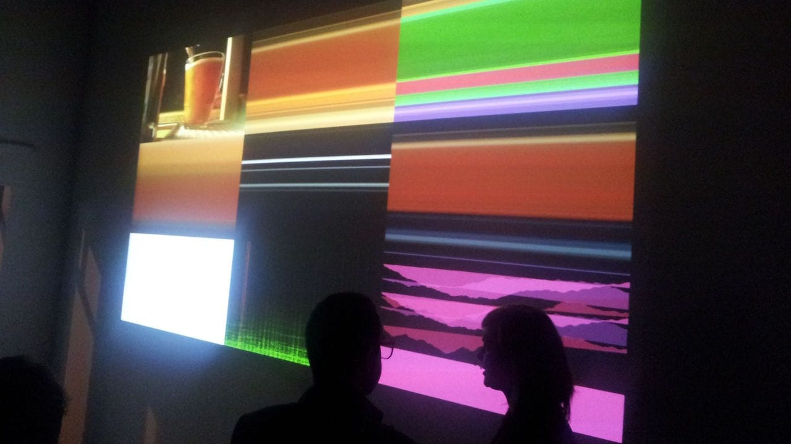
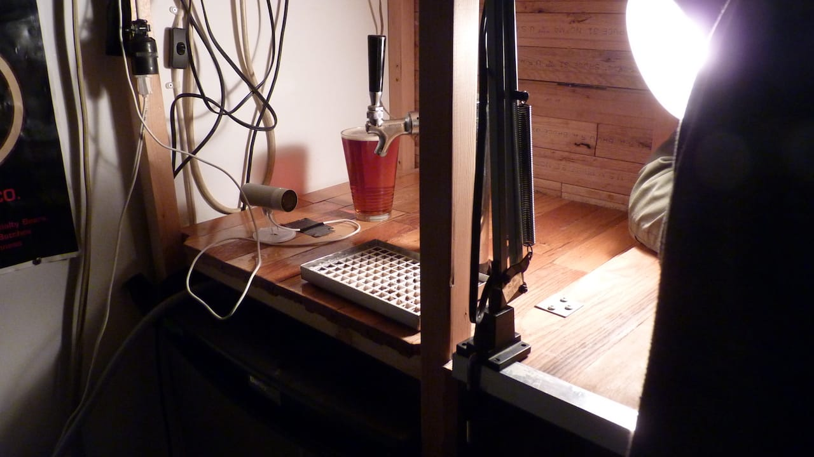
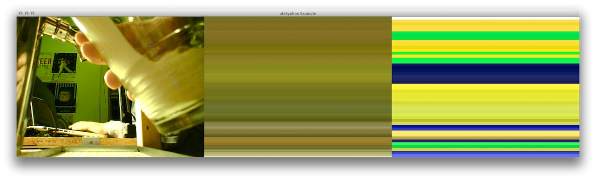
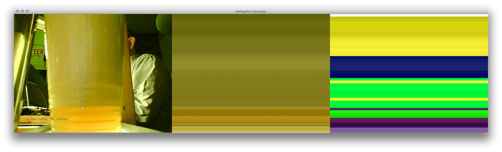

Decanter was a collaborative project with
Leó Stefánsson
for the video bar at
VIVO Media Arts.
The installation consisted of a camera tracking a beer tap, and when the beer would be 'decanted' into a glass,
a wave of noise would be generated based off the pouring and settling of the beer.
We wrote a custom
openFrameworks
application to do various image recognition algorithms on the video feed,
including frame differencing and colour sorting.
The oF app would then parse the data and pass it along to another program, a custom
Max/MSP app,
which would sonicize the data, as well as using Jitter to stitch together the
Syphon
feed and combine it with some custom visual renderings of the ensuing FFT analysis.
The source code can be found on my
GitHub.



